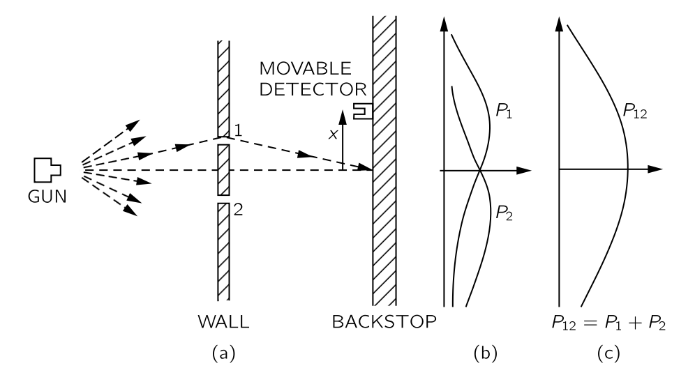
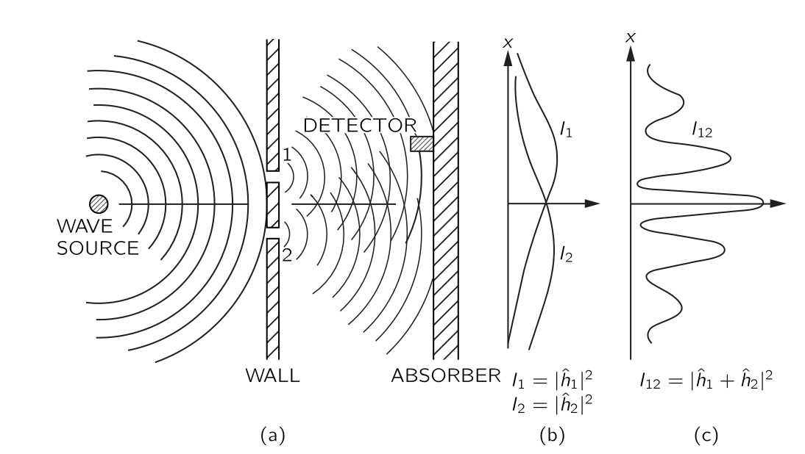
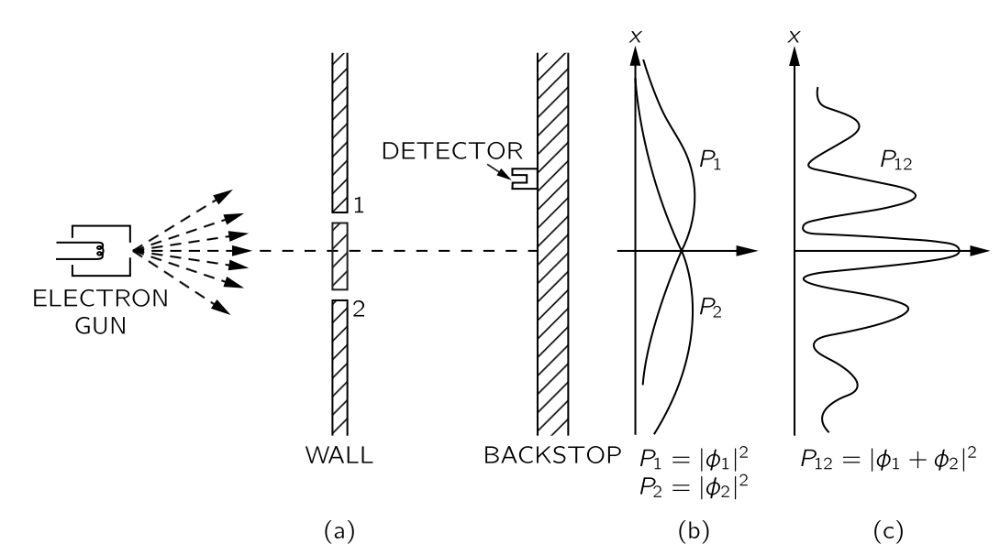
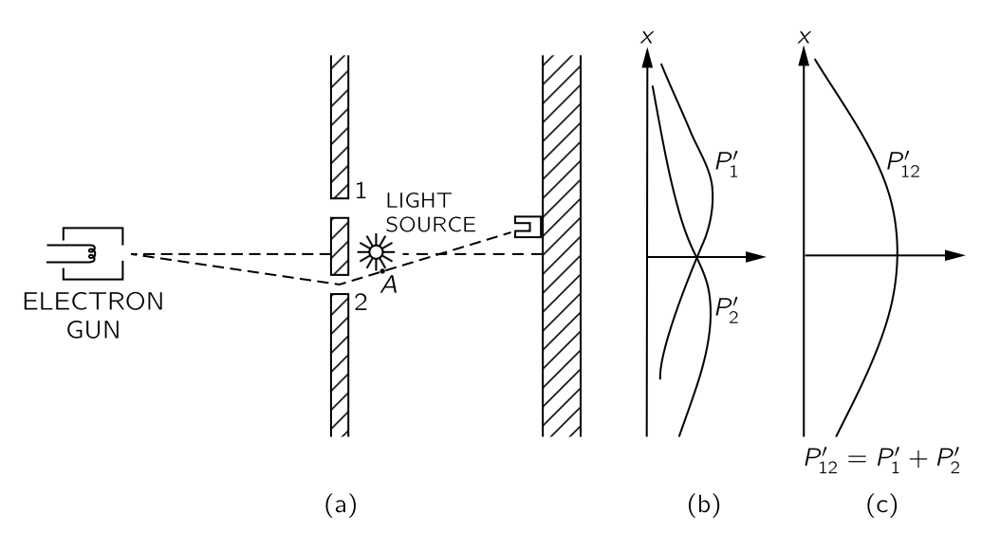
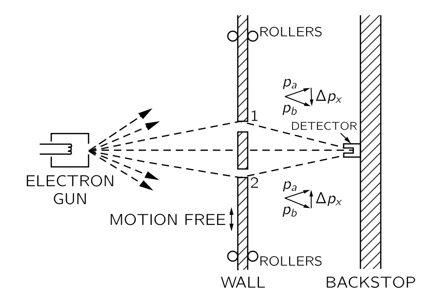
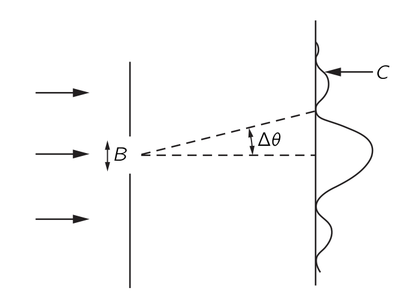
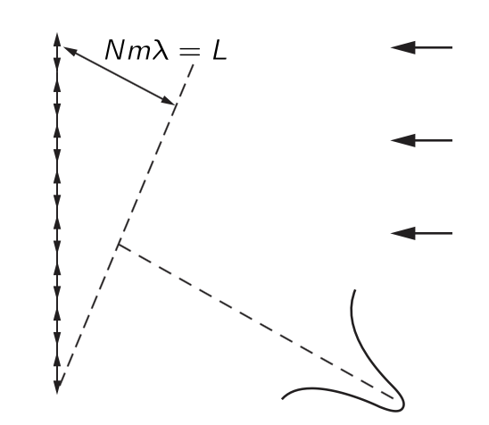
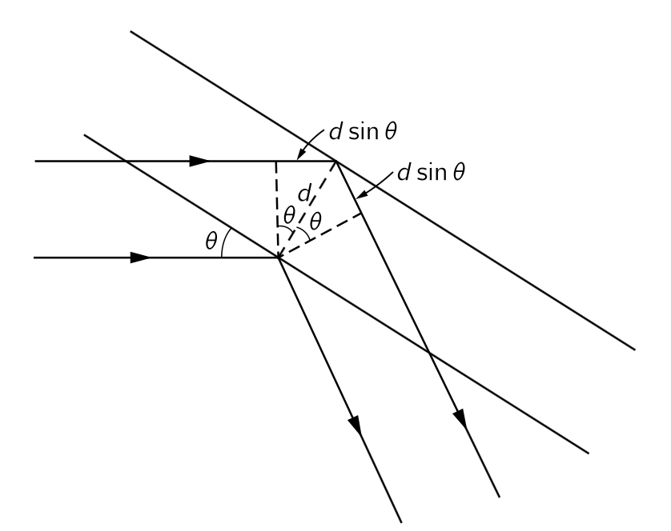

% %
%
\[ \DeclarePairedDelimiters{\set}{\{}{\}} \DeclareMathOperator*{\argmax}{argmax} \]
I.37 Quantum Behavior
I.37-1 Atomic mechanics
I.37-2 총알 실험

위의 그림과 같이 설정된 기관총 실험을 생각하자. 기관총은 성능이 훌륭하지 못해 고정된 각으로 발사하지 못하고 임의로 퍼져서 발사한다고 생각하자. 우리가 관심있는 것은 총알이 1번 혹은 2번 구멍을 거쳐 backstop 의 중심으로부터 거리 \(x\) 에 박힐 확률이다. 이를 \(P_{12}(x)\) 로 표기하자.
확률을 도입했다. 기관총에서 각각의 총알이 정확히 어떤 방향으로 가는지 모르기 때문이다. 이 확률은 특정 시간 범위 안에 \(x\) 와 \(x+dx\) 사이에 박힌 총알의 개수를 이 시간 범위 안에 backstop 에 박힌 모든 총알의 개수 \(N\) 으로 나누는 것으로 측정 할 수 있다.
여러가지 자잘한 가정이 들어간다. 총알이 구멍에 부딛쳐 여러개로 쪼개지지 않고 온전한 총알로 backstop 에서 검출된다, 총알을 발사하는 속도가 일정하다.. 등등
이제 2번 구멍을 막고 같은 시간동안 같은 실험을 반복하면 모든 총알은 1번 구멍을 통과할 것이며 \(x\) 와 \(x+dx\) 에 총알이 박힌 개수를 \(N\) 으로 나누면 분포 \(P_1(x)\) 를 계산 할 수 있다. 또한 1번 구멍을 막고 2번 구멍을 통과하는 실험을 통해 \(P_2(x)\) 를 계산 할 수 있다. 당연히 아래의 결과가 나온다.
\[ P_{12}(x) = P_1 (x) + P_2(x). \tag{3.1}\]
I.37-2 파동 실험

위의 그림과 같이 설정된 파동 실험을 생각하자. 검출기가 움직이는 벽으로부터 파동이 반사되는 것을 막기 위해 벽은 파동을 흡수하는 흡수벽(absorber)이어야 한다. 검출기에서 파동의 높이를 측정한다면 파동의 강도는 진폭의 제곱이다. 파동의 강도 \(I_\text{12}\) 를 흡수벽 의 중심으로부터의 변위 \(x\) 에 대한 함수로 측정한다. 또한 총알 실험과 같이 \(2\) 번 홀을 막은 상태에서 \(I_1\) 을 측정하고 \(1\) 번 홀을 막은 상태에서 \(I_2\) 를 측정한다. \(I_1\) 측정시 검출기에서 검출되는 파동은 \(\hat{h}_1e^{i\omega t}\) 로 기술된다. 여기서 \(\hat{h}_1\) 은 복소수이다. 마찬가지로 \(I_2\) 측정시 검출기에서 검출되는 파동은 \(\hat{h}_2 e^{i\omega t}\) 로 기술된다. 그렇다면 \(I_{12}\) 에 대한 파동은 \(\hat{h}_1 e^{i\omega t}+ \hat{h}_2 e^{i\omega t}\) 로 기술되며
\[ I_1 = |\hat{h}_1|^2,\quad I_2=|\hat{h}_2|^2,\quad I_{12} = |\hat{h}_1 + \hat{h}_2|^2 \tag{3.2}\]
이다. 즉 \(\hat{h}_1,\,\hat{h}_2\) 의 위상차 \(\delta\) 에 대해 다음이 성립한다.
\[ I_{12} = I_1 + I_2 + 2\sqrt{I_1I_2} \cos \delta \tag{3.3}\]
여기서 마지막 항 \(2\sqrt{I_1I_2}\cos \delta\) 를 간섭항(interference term) 이라고 한다.
I.37-4 전자 실험

이제 전자로 동일한 실험을 해 보자. 그림 3.1 에서 기관총을 전자총으로 바꾸고 다른 실험 장비의 스케일을 아주 작게 맞추는 것이라고 생각하자. 실제로 이런 장비를 갖추는 것은 불가능하지만. 이 실험 과정에서 우리는 아래와 같은 사실을 알게 된다.
결과 1 : 검출되는 전자는 개수이다. 즉 전자가 두개 이상으로 쪼개져서 검출되지 않는다.
결과 2 : 전자 하나가 발사되었을 때, 그리고 두개 이상의 검출기를 동시에 설치했을 때 두 검출기에서 동시에 검출되지 않는다.
자 이제 총알 시험 에서와 같이 확률 \(P_{12},\, P_1,\, P_2\) 를 구할 수 있다. 그리고 그 결과(그림 3.3) 는 놀랍게도 그림 3.1 이 아닌 그림 3.2 과 같다.
I.37-5 전자 파동의 간섭
결과 2 로부터 우리는 다음과 같은 가설을 새울 수 있다.
가설 A: 각각의 전자는 1 번 구멍을 통과하거나 2번 구멍을 통과한다.
이로부터 우리는 \(P_{12} = P_1+P_2\) 라는 결론을 내릴 수 있지만 실험 결과와는 모순되다. 그렇다면 우리는 간섭이 있다고 볼 수 밖에 없다. 그렇다면 어떻게 간섭이 발생할 수 있을까? 둘 (혹은 그 이상으로) 분리되어 간섭한다는 논리는 결과 1과 상충된다. 혹시 구멍 하나를 닫으면 열린 구멍으로 더 많은 전자가 통과할까? 그러나 결과는 \(P_{12}(0) = 2(P_1(0)+P_2(0))\) 라는 것을 보여준다. 전자가 매우 복잡한 경로로 진행한다는 가정은 별로 설득력이 없어 보인다.
이것을 해결하기 위해 많은 아이디어가 제시되었지만 \(P_1,\,P_2\) 로 \(P_{12}\) 를 표현하는데 성공하지 못했다. 수학은 간단하다 \(P_1,\, P_2,\, P_{12}\) 이 파동식험에서의 \(I_1,\, I_2,\, I_{12}\) 와 같은 관계를 가지면 된다. Backstop 에서 벌어지는 일은 어떤 복소함수 \(\hat{\phi}_1(x),\, \hat{\phi}_2(x)\) 에 대해
\[ P_1(x) = |\hat{\phi}_1(x)|^2,\quad P_2(x) = |\hat{\phi}_2(x)|^2,\quad P_{12}=|\hat{\phi}_1(x)+\hat{\phi}_2(x)|^2 \]
이면 된다. 이제 우리는 다음과 같은 결론을 내릴 수 밖에 없다.
전자는 총알에서처럼 같이 온전한 입자 형태로 도착하며, 이러한 온전한 입자가 도착할 확률의 분포는 파동의 강도 분포와 같다. 이러한 의미에서 전자는 때때로 입자처럼, 때때로 파동처럼 행동한다.
우리가 파동을 다룰 때 복소수를 사용하는 것은 일종의 수학적 트릭이었다. 그러나 양자역학에서의 이 진폭은 실제 복소수여야 한다는 것이 밝혀졌다. 실수만으로는 작동하지 않는다. 그리고 그렇게 되면 가설 A 는 폐기되어야 한다. 즉 전자는 1번 혹은 2번 구멍중에 하나만을 통과하지 않는다.
I.37-6 전자 관찰

이제 이전의 실험장비에 위의 그림과 같이 강한 광원을 놓자. 빛은 전자에 의해 산란되므로 전자가 1번 구멍 혹은 2번 구멍을 통과하는지 알 수 있다. 2번 구멍을 통과하면 아래쪽에서, 1번 구멍을 통과한다면 위쪽에서 신호가 올 것이다. 둘을 동시에 통과한다면? 어쨌든 해 보자. 그리고 그 결과는 다음과 같다.
- 전자가 검출될 때 마다 위쪽 혹은 아래쪽으로 신호가 온다. 그러나 이 신호는 동시에 오지 않는다. 검출기를 어디에 두더라도 마찬지다.
즉 전자는 1번 혹은 2번 구멍 가운데 하나만을 통과한다. 가설 A 는 정확했다. 그런데 놀라운 결과가 나왔다. 1번 구멍을 통과할 때만의 결과를 모아 \(P'_1\) 이라고 하고 2번 구멍을 통과할 때만의 결과를 모아 \(P'_2\) 를 구성 할 수 있다. 그리고 그 합인 \(P'_{12}=P'_1+P'_2\) 도 구할 수 있으며 그 결과는 그림 3.4 와 같다. 놀라운 결과가 나왔다.
전자 파동의 간섭 의 \(P_1,\, P_2\) 와 비교해 보면 \(P'_1=P_1,\, P'_2=P_2\) 이다. 그러나 \(P'_1,\, P'_2\) 는 구멍을 막지 않았다. 구멍을 막든 막지 않든 1번 구멍을 통과하는 전자는 동일한 확률 분포를 보인다. 2번 구멍도 마찬가지.
\(P'_{12}= P'_1+P'_2 \ne P_{12}\) 이다. 우리가 광원을 끈다면 \(P'_{12}(\text{off})=P_{12}\) 이다. 즉 우리가 광원을 켬으로서 전자의 경로가 뒤틀렸다. 우리가 전자의 경로를 본다면 간섭 효과는 사라진다.
혹시 밝기가 너무 강하여 전자의 경로를 변경시켰을까? 이제 밝기를 낮춰 보자. 밝기를 낮추는 것은 광자의 에너지를 바꾸지 않고 단위 시간당 방출되는 광자의 개수를 줄인다는 것이다. 이제 일부 전자는 빛에 산란되지 않고 검출기에 계측된다. 이 경우 전자가 통과했을 때 주변에 광자가 없었다.
이제 검출기에서 클릭 소리가 들릴 때마다 우리는 세가지로 분류한다: (1) 1번 구멍을 통과하는 신호를 낸 전자들의 분포 \(P''_1\) , (2) 2번 구멍을 통과하는 신호를 낸 전자들의 분포 \(P''_2\), (3) 구멍 통과 신호를 내지 않고 계측된 전자들의 분포 \(P''_{12}\). 결과는 다음과 같다.
\[ P''_1 = P'_1=P_1,\qquad P''_2 = P'_2 = P_2,\qquad P''_{12} = P_{12} \ne P'_{12}. \]
즉 전자가 관찰되지 않으면 간섭이 발생한다. 우리가 전자의 경로를 관하지 못하면 어떤 광자도 전자를 교란시키지 않으며, 전자의 경로를 관찰한다면 광자가 전자를 교란한다. 광자는 모두 동일한 크기의 효과를 발생시키고, 광자가 산란되는 효과는 간섭의 효과를 뭉게기에 충분하기 때문에 항상 동일한 양의 교란이 발생한다.
우리는 광자의 운동량이 파장에 반비례한다는 것을 안다(\(p=h/\lambda\)). 광자가 전자에 주는 충격은 광자의 운동량에 의존할 것이다. 따라서 이 충격을 줄이기 위해서는 빛의 강도를 약하게 할 것이 아니라 운동량을 줄여야 한다. 장파장의 빛을 사용한다면 전자를 교란하는 것을 피할 수 있을것이다. 그러나 여기에 한계가 있다. 우리는 앞서 광학 기구의 분해능에 대해 공부했었다. 만약 빛의 파장이 두 구멍 사이의 거리보다 길다면 전자가 어떤 구멍을 통과하는지 알 수 없게 된다. 그리고 이 부근부터 \(P'_{12}\) 는 \(P_{12}\) 와 비슷해진다. 즉 간섭의 효과가 발생한다. 그리고 파장이 두 구멍 사이의 거리보다 충분히 크다면 \(P'_{12}=P_{12}\) 가 된다. 간섭의 효과가 완전히 살아난다.
이 사고실험을 통해 전자가 어떤 구멍을 통과하는지 아는 것과 간섭 효과를 유지시키는 것을 동시에 하는것이 불가능하다는 것을 알게되었다. 이것이 하이젠베르크가 제안한 “불확정성의 원리” 이다.
그렇다면 첫 번째 총알 시험에서는 왜 간섭이 발생하지 않을까? 총알의 경우 파장이 너무 작아 간섭 패턴이 매우 미세해졌다. 사실, 매우 미세하여 유한한 크기의 어떤 검출기라도 최대값과 최소값을 구분할 수 없으며 우리가 본 것은 관측 가능한 범위에서의 일종의 평균일 뿐이다.
I.39-7 양자역학의 첫번째 원리
이제 실험의 주요 결론에 대한 요약하자. 이런 종류의 실험의 일반적인 범주에 대해서도 요약의 결과가 사실이 되도록 하겠다. 여기서 두가지 용어를 명확하게 하자.
- 이상적인 실험 : 불확실한 외부 영향이 없는, 즉 흔들림이나 우리가 고려할 수 없는 다른 일들이 없는 실험. “실험의 초기 및 최종 조건이 모두 완전히 명시된 경우” 라고 한다면 상당히 정확하다.
- 사건 : 일반적으로 초기와 최종 조건의 특정한 집합. (예: 전자가 총을 떠나 검출기에 도착하고, 그 외에는 아무 일도 일어나지 는 경우)
요약은 아래와 같다.
이 요약보다 더 근본적인 수준에서의 설명은 존재하지 않는다.
이제 고전 역학과 양자역학의 중요한 차이에 대해 강조하고자 한다. 앞서 주어진 상황에서 전자가 도착할 확률에 대해 이야기 했으며 정확히 어떤 일이 일어날지 예측하는 것이 불가능함을 암시했다. 우리는 확률만 예측할 수 있다! 이는 물리학이 특정 상황에서 정확히 어떤 일이 일어날지 예측하는 것을 포기했다는 의이이다. 우리는 주어진 상황에서 일어날 일을 예측하는 방법을 알지 못하며, 이제는 그것이 불가능하다고 믿으며, 예측할 수 있는 유일한 것은 다양한 사건의 확률이라고 생각한다. 이는 이전의 우리가 자연을 이해한다는 이상에 대한 재제한(retrenchment) 임을 인식해야 한다. 그것은 뒤로 물러나는 단계일 수도 있지만, 이를 피할 방법은 아직 없다.
혹은 “아마도 전자는 아직 알지 못하는 일종의 내부 작용—어떤 내부 변수—를 가지고 있는 것일지도 모른다. 아마도 그것이 우리가 일어날 일을 예측할 수 없는 이유일 것이다. 우리가 전자를 더 자세히 관찰할 수 있다면, 종래는 어디에 위치하게 될지 알 수 있을 것이다.” 라고 생각할수도 있다. 그러나 우리가 알기로는 그것은 불가능하다. 우리는 여전히 관란에 처하게 될 것이다. 예를 들어, 전자 내부에 어떤 종류의 machinary 가 있어 그것이 어디에 도착할지 결정한다고 가정해 보자. 그 기계는 또한 진행 중에 어느 구멍을 통과할지 결정해야 한다. 하지만 우리는 전자 내부에 있는 것이 우리가 하는 일에 의존해서는 안 되며, 특히 우리가 구멍 가운데 하나를 열거나 닫는지에 의존해서는 안된다. 따라서 전자가 출발하기 전에 이미 (a) 어떤 구멍을 통과할지, (b) 어디에 도착할지를 결정했다면, 1번 구멍을 선택한 전자는 \(P_1\) 을, 2 번 구멍을 선택한 전자는 \(P_2\) 를 구하고, 두 개의 홀을 통과하는 전자는 반드시 \(P_1+P_2\) 의 합을 구해야 한다. 이것을 고를 방법이 없는 것 같습니다. 하지만 우리는 실험적으로 그것이 그렇지 않다는 것을 확인했다. 그리고 아무도 이 퍼즐에서 탈출할 방법을 찾지 못했다. 따라서 현재는 우리는 확률을 계산하는 데만 국한해야 합니다. 우리는 “현재는” 라고 말하지만, 그것이 영원히 우리와 함께할 것이라고-그 퍼즐을 이기는것이 불가능하다고-매우 강하게 의심합니다. 즉 이것이 자연이 실제로 존재하는 방식이라는 것이다.
I.37-8 불확정성의 원리
하이젠베르그가 최초로 제안한 형태는 아래와 같다.
운동량의 \(x\) 성분 \(p_x\) 를 \(\Delta p_x\) 의 불확도로 측정했을 때, 동시에 \(x\) 방향 위치를 측정한다면 그 불확도 \(\Delta x\) 는 \(\hbar/2\Delta p_x\) 보다 크다.
더 일반적인 진술은 아래와 같다. > 두 대안 중 어느 것이 취해지는지를 판단하면서 동시에 간섭 패턴을 파괴하지 않는 실험장비를 고안할 수 없다.
하이젠베르크가 제시한 관계가 반드시 참이어야 문제가 발생하지 않는 특정한 예를 들어보자.
예제 3.1 (이중슬릿실험의 개선과 불확정성의 원리)

그림 3.3 의 실험을 위와 같이 개선해 보자. 여기서는 벽(wall)은 롤러로 지탱하는 판으로 구성되었고 판은 위나 아래로 (\(x\)-방향으로) 자유롭게 움직일 수 있다. 그리고 검출기는 \(x=0\) 에 고정되어 있다.
검출기에 계측된 전자가 벽이 1번 구멍을 지난다면 회절에 의해 운동량이 아래로 꺽이며, 운동량 보존에 의해 벽의 판은 위로 반동된다. 계측된 전자가 2번 구멍을 지난다면 벽의 판은 아래로 반동된다. 우리는 전자를 교란시키지 않고 판의 움직임만 보고서도 전자가 어느 구멍을 통과했는지 알 수 있게된다.
우리는 전자가 통과하고 난 뒤 판의 운동량의 변화를 측정해야 한다. 그러나 불확정성의 원리에 의해 판의 위치와 운동량을 동시에 정확하게 측정 할 수 없다. 우리가 판의 위치를 정확하게 알 수 없다면 두 구멍의 위치도 정확하게 알 수 없다. 각각의 전자가 통과할 때 마다 서로 다른 위치에 있게 되며 따라서 간섭무늬의 중심도 움직이며 간섭 무늬 자체가 뭉개진다.
다음 장에서 우리는 판의 운동량을 충분히 정확하게 결정하여 반동 측정으로부터 어떤 구멍을 통과했는지 판단할 수 있다면, 불확정성 원리에 따라 판의 \(x\) 위치에 대한 불확정성이 검출기에서 관찰되는 패턴을 최대값에서 가장 가까운 최소값까지의 거리만큼 위아래로 이동시키기에 충분하다는 것을 정량적으로 보여줄 것이다. 즉 간섭이 관찰되지 않을 정도로 충분하다.
하이젠베르크는 운동량과 위치를 동시에 더 높은 정확도로 측정할 수 있다면 양자역학이 붕괴될 것임을 인식으며 따라서 그것이 불가능해야 한다고 제안했다. 그 당시 사람들은 자리에 앉아 방법을 찾으려 했지만 위치와 운동량을 더 정확하게 측정할 방법을 아무도 찾지 못했다.
I.38 입자 관점과 파동 관점의 관계
I.38-1 확률파의 진폭
In this chapter we shall discuss the relationship of the wave and particle viewpoints. We already know, from the last chapter, that neither the wave viewpoint nor the particle viewpoint is correct. Usually we have tried to present things accurately, or at least precisely enough that they will not have to be changed when we learn more—it may be extended, but it will not be changed! But when we try to talk about the wave picture or the particle picture, both are approximate, and both will change. Therefore what we learn in this chapter will not be accurate in a certain sense; it is a kind of half-intuitive argument that will be made more precise later, but certain things will be changed a little bit when we interpret them correctly in quantum mechanics. The reason for doing such a thing, of course, is that we are not going to go directly into quantum mechanics, but we want to have at least some idea of the kinds of effects that we will find. Furthermore, all our experiences are with waves and with particles, and so it is rather handy to use the wave and particle ideas to get some understanding of what happens in given circumstances before we know the complete mathematics of the quantum-mechanical amplitudes. We shall try to illustrate the weakest places as we go along, but most of it is very nearly correct—it is just a matter of interpretation.
양자역학에서는 발생할 수 있는 모든 사건에 진폭을 부여한다. 그리고 사건이 한 입자의 reception 과 관련된다면 우리는 이 입자가 다른 시간 다른 장소에서 발견될 진폭을 부여할 수 있다. 그리고 입자를 발견할 확률은 진폭의 절대값 제곱이다. 한 입자를 다른 장소와 다른 시간에 발결할 확률은 위치와 시간에 따라 변한다.
특별한 경우 진폭은 정해진 진동수 \(\omega\) 와 파수 벡터(wave vector) \(\boldsymbol{k}\) 에 대해 \(e^{i(\omega t - \boldsymbol{k\cdot r})}\) 와 유사한 형태이다. 이것은 입자의 에너지 \(E\) 가 알려져 있으며 진동수와
\[ E= \hbar \omega \tag{3.4}\]
의 관계가 있으며 운동량 \(\boldsymbol{p}\) 역시 알려져 있고 파수 벡터 \(\boldsymbol{k}\) 와 \[ \boldsymbol{p}=\hbar \boldsymbol{k} \tag{3.5}\]
의 관계가 있는 고전적인 극한에 해당한다. 이것은 입자 관점의 한계이다. 입자 관점, 즉 위치와 운동량으로 기술하는 관점인데 진폭 \(e^{i(\omega t -\boldsymbol{k\cdot r})}\) 의 절대값의 제곱은 상수이며 이는 모든 지점에서 발견될 확률이 동일하다는 의미이기 때문이다.
반대로 입자의 위치가 어느 정도 잘 알려져 있고 향후의 위치도 잘 예측 할 수 있다면 입자를 다른 장소에서 발견할 확률은 특정 영역에 제한적이다. 이 영역을 \(\Delta x\) 라고 하며 이 영역 밖에서 발견할 확률은 \(0\) 이다. 확률은 진폭의 절대값 제곱 이며 따라서 진푝 역시 \(\Delta x\) 영역 밖에서는 \(0\) 이다. 즉 우리는 길이가 \(\Delta x\) 인 파동 패킷(wave packet)\(^1\) 을 얻으며 이 파동 패킷의 파장은 입자의 운동량에 대응한다. 그러나 이런 파동 패킷에 고유한 파장을 정할수 없다는 것이 잘 알려져 있다. 이 파동 패킷이 특정한 파장을 가지지 않는다면 파수에도 이 패킷의 폭과 관련된 불확실성이 존재하며 이것은 운동량의 불확실성이다.
I.38-2 위치와 운동량의 측정
예제 3.2 (단일 슬릿을 통과하는 입자의 회절)

위의 그림과 같은 단일 슬릿 실험을 생각하자. 입자들은 정해진 에너지를 가지고 아주 멀리서부터 수평 방향으로 진입한다. 모든 입자들은 고전적인 의미에서 수평방향의 운동량을 \(p_0\) 와 수직방향의 운동량 \(p_y\) 를 갖는다. 입자는 멀리 떨어진 곳에서 왔기 때문에 위나 아래로 움직이지 않으며, 따라서 수직 운동량은 당연히 0 이다. 이제 이 입자가 폭이 \(B\) 인 슬릿을 통과한다고 하자. 이제 우리는 입자의 수직 위치에 대한 불확실성은 \(\pm B/2\) 이다.
이제 우리는 운동량이 절대적으로 수평임을 알고 있기 때문에 \(\Delta p_y=0\) 이라고 말하고 싶을 수도 있지만, 그것은 틀렸다. 우리는 한때 그 운동량이 수평방향만 존재한다는 것을 알았을 뿐, 더 이상을 알지 못한다. 입자들이 구멍을 통과하기 전에, 우리는 그들의 수직 위치를 알지 못했다. 이제 입자가 구멍을 통과하도록 하여 수직 위치를 찾았으나 수직 운동량에 대한 정보를 잃어버렸다! 왜? 파동 이론에 따르면, 빛과 마찬가지로 파동이 슬릿을 통과한 후에도 회절이 일어나며 따라서 슬릿에서 나오는 입자들이 정확히 직선으로 나오지 않을 가능성이 있다. 패턴은 회절 효과로 인해 퍼지며 첫 번째 최소값의 각도로 정의할 수 있는 확산각은 최종 각도의 불확실성을 측정한 것이다.
패턴은 어떻게 확산되는가? 그것이 퍼졌다고 말한다는 것은 입자가 위아래로 움직일 가능성이 어느 정도 있다는 의미이며, 즉 운동량의 수직 성분이 \(0\) 이 아니라는 의미이다. 우리는 이 회절 패턴을 입자 카운터로 감지할 수 있으며 카운터는 온전한 입자를 세기 때문에 가능성 과 입자 라고 말한다. 그리고 예를 들어 그림 3.6 의 \(C\) 에서 온전한 입자를 측정하기 때문에, 고전적인 의미에서 입자는 슬릿에서 \(C\) 까지 도달하기 위해 수직 운동량을 갖는다.
수직 운동량 \(p_y\) 은 대략 \(p_0 \Delta \theta\) 와 같은 확산을 가진다. 그렇다면 확산 패턴에서 \(\Delta \theta\) 는 어느 정도인가? 우리는 패턴의 첫번째 최소값이 \(\Delta \theta\) 각도에서 발생하여 슬릿의 한쪽 가장자리에서 나오는 파동이 반대쪽에서 오는 파동보다 한 파장 더 많이 이동해야 한다는 것을 알고 있다. 따라서 \(\Delta \theta\) 는 \(\lambda /B\) 이며, 따라서 이 실험에서 \(\Delta p_y = p_0 \lambda/B\) 이다. \(B\) 를 작게 만들어 입자의 위치를 보다 정확하게 측정하면 회절 패턴이 넓어진다는 것을 기억하라. 이는 입자가 수직방향의 운동량을 가지고 있음을 발견할 가능성이 높아짐을 의미한다. \(\Delta y = B/2\) 이며 \(p_0 = h/\lambda\) 이므로 우리는 \((\Delta y)(\Delta p_y) \approx h\) 라는 규칙을 얻는다. 정확히는 아래와 같다.
\[ (\Delta y ) (\Delta p_y) \ge \dfrac{\hbar}{2}, \quad\text{where }\hbar = \dfrac{h}{2\pi} \tag{3.6}\]
우리는 입자의 수직 위치를 알고, 식 3.6 에서 제시된 것보다 더 높은 확신을 가지고 입자의 수직 이동을 예측할 수 있는 시스템을 준비할 수 없다. 즉, 수직 운동량의 불확실성은 \(\hbar/2\Delta y\) 를 초과해야 한다.
우리가 입자가 슬릿을 통과하기 전의 운동량을 충분히 작은 불확실성 \(\Delta p_y^{(i)}\) 으로 안다고 하자. 그리고 입자가 슬릿을 통과하면서 위치에 대한 정보도 충분히 작은 불확실성으로 일 수 있다. \(\Delta y = B\). 이 값의 곱이 \(\hbar/2\) 보다 작게 만들 수 있으며 이는 식 3.6 와 모순된다. 무엇이 어디서부터 잘못됬을까? 식 3.6$ 이 의미하는 바는 상황의 예측 가능성을 의미하며, 과거에는 의미가 없다. 슬릿을 통과하는 순간 과거 운동량에 대한 지식은 무의미하다.
예제 3.3 (단일 슬릿을 통과하는 입자의 회절)

많은 수의 선으로 이루어진 회절격자(I.30 회절 을 참고하라)에 빛을 입사시키면 간섭으로 인해 특정한 각도에서 강한 빛을 얻는다. 여기서 얼마나 정확하게 빛의 운동량을 측정할 수 있을지 생각해보자. 주어진 회절격자의 분해능은 식 2.57 이다. 여기서 \(N\) 은 선의 개수이고 \(m\) 은 회절격자의 치수이다. 여기서 \(L=Nm\lambda\) 라고 하면 회절격자의 양 끝단에서 반사된 빛 혹은 입자의 경로차이다. 회절격자의 분해능과 \(L\) 로 부터 다음 식을 얻는다.
\[ \dfrac{\Delta \lambda}{\lambda^2} = \dfrac{1}{Nm\lambda} = \dfrac{1}{L}. \tag{3.7}\]
즉 회절 패턴을 형상하는 파동등은 격자의 다른 부분으로부터 오는 파동들이다. 위의 식으로 부터 \(\Delta \lambda\) 를 최소화 하기 위해서는 최대한의 \(L\) 을 사용해야 한다는 것을 알 수 있다. 또한
\[ \dfrac{\Delta \lambda}{\lambda^2} = \Delta \left(\dfrac{1}{\lambda}\right) = \dfrac{\Delta k}{2\pi} \tag{3.8}\]
이므로
\[ \Delta k = \dfrac{2\pi}{L} \tag{3.9}\]
이다. \(p=hk\) 이므로 \(\Delta p = h\Delta k\) 이다. 또한 \(L\) 은 관측 지점에 도착하는 파동 패킷의 폭을 결정한다. 즉 \(\Delta x= L\) 이다. 실제로 파동 패킷의 길이와 파수의 불확정도를 곱하면 \(\pi\) 보다 크다는 것은 양자역학 이전에도 잘 알려져 있는 사실이다.
… to be updated …
I.28-3 결정 회절
원자, 이온, 분자 등이 3차원 공간에서 규칙적이고 주기적인 패턴으로 배열된 고체 물질을 결정(Crystal, 結晶) 이라고 한다. 강한 반사 신호를 얻기 위해서는 모든 원자로부터의 산란의 위상이 일치해야 한다.

위의 그림과 같은 두 평면을 생각하자. 이 두 면에서의 파동이 산란될 때 경로차가 파장의 정수배라면 산란된 파동은 동일한 위상을 갖게 된다. 이 결맞는 반사(coherent reflection) 의 조건은 다음과 같다.
\[ 2d\sin \theta = n \lambda \qquad (n=1,\,2,\ldots). \tag{3.10}\]
결정의 원자들이 식 3.10 에서 \(n=1\) 을 만족하는 면 위에 있다면 강한 반사가 생긴다. 반면 같은 성질을 갖는 원자들이 같은 밀도로 중간에 존재한다면 중간의 평면에 의해 소멸간섭이 발생하여 아무 일도 벌어지지 않을 것이다. 따라서 \(d\) 는 가장 가까운 평면 사이의 거리가 되어야 한다.
식 3.10 에서 \(d< \lambda/2\) 라면, 즉 \(\lambda > 2d\) 이면 만족하는 \(\theta\) 가 존재하지 않는다. 즉 회절에 의한 신호가 발생하지 않는다. 가시광선의 경우 일반적인 결정의 \(d\) 에 비해 매우 크기 때문에 회절 패턴이 검출되지 않는다.
I.38-4 원자의 크기
수소 원자의 크기와 에너지
여기서는 원자의 크기에 대해 불확정성의 원리를 이용하여 근사적 계산을 수행하려 한다. 아이디어는 옳지만 실제 계산은 정확하지 않다.
수소 원자의 전자의 위치를 측정한다고 하자. 전자가 정확히 어디에 위치할지 예측할 수 없으며, 그렇지 않으면 운동량은 무한히 퍼져있게 된다. 전자의 위치를 측정할 수 있지만 다른 위치에서 발견될 가능성이 있다. 이 위치는 핵은 아니며, \(a\) 정도로 퍼져있다고 가정하자.즉, 전자와 핵 사이의 거리는 보통 약 \(a\) 이다. 이제 원자의 전체 에너지를 최소화함으로써 \(a\) 를 결정해 보자.
우선 \((\Delta p_x)^2 = \langle p_x^2\rangle - \langle p_x \rangle^2\) 이며 대칭을 고려하면 의해 \(\langle p_x\rangle =0\) 이므로 \((\Delta p_x)^2 = \langle p_x^2\rangle\) 이다. 따라서
\[ \langle p^2\rangle = (\Delta p_x)^2 + (\Delta p_y)^2 + (\Delta p_z)^2 \approx \dfrac{\hbar^2}{a^2} \]
을 얻는다. 그렇다면 총 에너지 \(E\) 는
\[ E = \dfrac{\langle p^2\rangle}{2m^2} - \dfrac{e^2}{a} = \dfrac{\hbar^2}{2ma^2} - \dfrac{e^2}{4\pi\epsilon_0 a} \]
이며 \(E\) 를 최소로 하는 \(a\) 값을 \(dE(a_0)/da=0\) 을 통해 계산하면
\[ a_0 = \dfrac{4\pi\epsilon_0\hbar^2}{me^2} = 0.528 \times 10^{-10}\,\text{m} \tag{3.11}\]
이다. 이 \(a_0\) 를 보어 반지름 (Bohr radius) 라고 하며 실제로 꽤 정확한 값이다. 또한 이 \(a_0\) 를 통해 수소원자의 전자의 에너지 \(E_0\) 를 계산하면
\[ E_0 = \dfrac{\hbar^2}{2ma_0^2} - \dfrac{e^2}{4\pi\epsilon_0 a_0} = -13.6 \text{ eV} \tag{3.12}\]
이다. 에너지가 음수인 것은 전자가 수소 원자에 묶여 있기 때문이다. 그리고 이 값은 계산 과정에서 대략적인 근사를 사용했음에도 불구하고 매우 정확한 수소 원자의 이온화 에너지값이다.
원자의 안정성
이제 우리가 바닥을 뚫고 지나가서 떨어지지 않는 이유를 알 수 있다. 우리가 걸을 때 우리 신발은 원자의 질량으로 바닥의 원자를 누른다. 이 원자들이 서로 뭉뜽겨러지기 위해서는 원자들이 서로 매우 가까워지고 전자들 역시 훨씬 좁은 공간으로 제한되어야 한다. 그러나 불확정성의 원리에 의해 운동량이 매우 커지게 되고 이는 에너지를 증가시킨다. 원자를 압축시킬때의 이런 효과는 고전적인 효과가 아닌 양자역학적인 효과이다. 고전적으로는 전자와 양성자의 바닥상태는 둘이 붙어있는 상태이다. 양자역학이 등장하기 전까지 원자의 존재는 풀리지 않는 문제였다.
말이 나온김에 말하자면, 많은 전자가 있는 상황에서는 전자들이 서로 멀리 두려고 한다. 한 전자가 특정 공간을 차지하고 있다면, 다른 전자는 같은 공간을 차지하지 않는다. 정확히 말하면, 두 개의 스핀 케이스가 있어 두 개가 서로 위에 앉을 수 있으며, 하나는 한 방향으로 회전하고 다른 하나는 반대 방향으로 회전한다. 하지만 그 이후에는 더 이상 전자를 그곳에 추가 할 수 없다. 우리는 다른 전자를 다른 곳에 배치해야 하며, 그것이 바로 물질이 내구력을 가지는 진정한 이유이다. 만약 모든 전자를 같은 위치에 놓을 수 있다면 현재보다 더 많이 응축될 것이다. 전자들이 모두 서로 겹칠 수 없다는 사실이 테이블과 그 외 모든 것을 단단하게 만드는 이유이다.
I.38-5 에너지 준위
앞서 원자에 대해 가능한 가장 낮은 에너지 조건에 대해 알아보았지만, 전자는 너 높은 에너지를 가질 수 있다. 양자역학에 따르면 정적인 상태에서는 원자에 대해 정해진 에너지만 존재할 수 있다. 자유전자, 즉 에너지가 양수인 전자는 어떤 에너지든 가질 수 있으며 어떤 속도로든 움직일 수 있지만 속박된 전자의 에너지는 임의적이지 않다.
이제 허용된 에너지를 \(E_0,\,E_1,\,E_2,\,E_3\) 하자. 가장 낮은 에너지 \(E_0\) 를 갖는 상태를 바닥 상태 (ground state) 라고 하고 바닥 상태보다 높은 에너지 \(E_1,\,E_2,\,E_3\) 를 갖는 상태를 들뜬 상태 (excited state) 라고 한다. 들뜬 상태의 원자는 영원히 거기 있을 수 없으며 빛의 형태로 에너지를 방출하고 더 낮은 에너지 상태로 떨어진다(이를 전이된다고 한다). 방출되는 빛의 진동수는 두 상태의 에너지 차이에 의해 에너지를 보존하는 방식으로 결정된다. 즉 들뜬 상태 \(E_j\) 에서 이보다 에너지가 낮은 상태 \(E_i\) 로 전이될 때 방출하는 빛의 진동수 \(\omega_{ji}\) 는
\[ \omega_{ji} = \dfrac{E_j - E_i}{\hbar} \tag{3.13}\]
이다. 또한 \(E_j\) 와 \(E_i\) 사이에 \(E_k\) 상태가 있어 \(E_j > E_k > E_i\) 이며 \(\omega_{jk}\) 와 \(\omega_{ki}\) 를 안다면
\[ \omega_{ji} = \omega_{jk} + \omega_{ki} \]
이다. 이를 리츠 조합 원리 (Ritz combinational principle) 라고 한다.
우리는 이미 양자역학이 특정 진동수와 파수를 갖는 파동처럼 행동하는 진폭으로 표현된다는 것에 대해 논의했다. 원자가 명확한 에너지 상태를 가지고 있다는 진폭 관점에서 이것을 관찰해 보자. 지금까지 설명한 것으로는 이해할 수 없지만 제한된 공간적으로 한정된 파동이 일정한 진동수를 가진다는 사실은 우리 모두 잘 알고 있다. 예를 들어 소리가 오르간 파이프나 그와 유사한 것에 한정된 경우, 소리가 진동할 수 있는 방법은 하나 이상 존재하며, 각 방법마다 일정한 진동수를 가진다. 파동이 한정된 물체는 일정한 공명 주파수를 가지고 있다. 따라서 제한된 공간에 존재하는 파동의 특성은—이 주제는 나중에 공식과 함께 자세히 논의할 것이다—그 파동은 일정한 주파수에서만 존재한다는 것이다. 그리고 진폭과 에너지의 주파수 사이에 일반적인 관계가 존재하므로, 원자에 결합된 전자와 연관된 명확한 에너지를 발견하는 것이 놀랍지 않다.